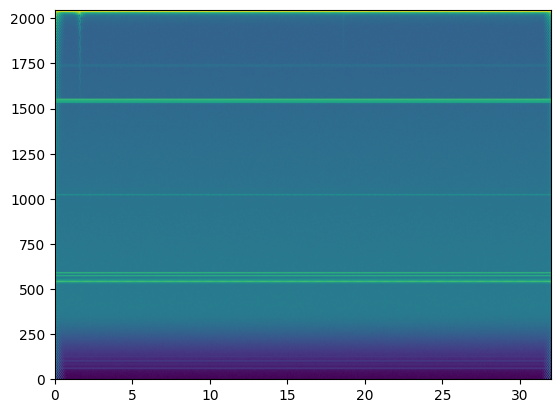
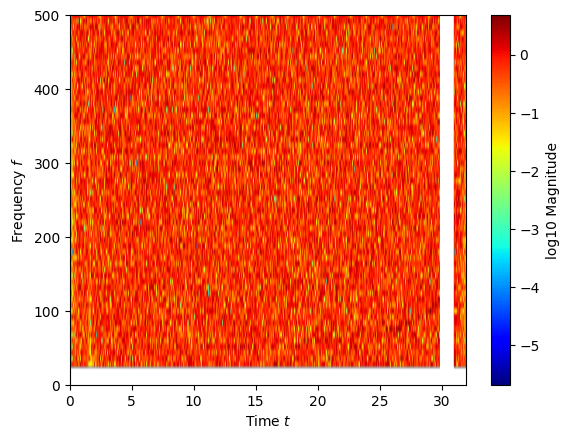
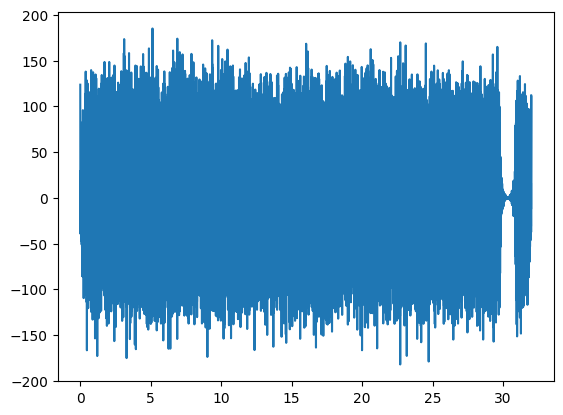

Filtering, whitening and glitch removal
To run this notebook you will need to download the GW data.
python download_GW170817_data.py
Use the L1 GW170817 data to demonstrate (i) glitch removal, (ii) bandpass filtering, and (iii) whitening in the wavelet time-frequency domain.
[1]:
import numpy as np
import matplotlib.pyplot as plt
import WDM
Load the Livingston data around GW170817.
[2]:
path = "../data/L-L1_GWOSC_4KHZ_R1-1187006835-4096.txt"
with open(path, 'r', encoding='utf-8') as f:
for line in f:
if line.startswith('#'):
print(line.rstrip('\n'))
else:
break
data = np.loadtxt(path)
f_samp = 4096.0
gps_time = 1187006835.0 + np.arange(data.shape[0]) / f_samp
# Gravitational wave strain for GW170817_R1 for L1 (see http://losc.ligo.org)
# This file has 4096 samples per second
# starting GPS 1187006835 duration 4096
Noise Estimatation
[3]:
def overlapping_windows(x, num_perseg, num_overlap):
"""
Split input `x` into overlapping windows. Trailing samples that don't fill
a full window are discarded.
Parameters
----------
x : ndarray
Input array to split into windows.
num_perseg : int
Length of each segment.
num_overlap : int
Number of overlapping samples between segments.
Returns
-------
y : ndarray
Array of shape (n_windows, num_perseg).
"""
x = np.asarray(x)
if x.ndim != 1:
raise ValueError("x must be 1D")
if num_perseg <= 0:
raise ValueError("num_perseg must be positive")
if not (0 <= num_overlap < num_perseg):
raise ValueError("num_overlap must satisfy 0 <= overlap < num_perseg")
step = num_perseg - num_overlap
if x.size < num_perseg:
return np.empty((0, num_perseg), dtype=x.dtype)
return np.lib.stride_tricks.sliding_window_view(x, num_perseg)[::step]
[4]:
num_perseg = 32*int(f_samp)
num_overlap = num_perseg // 10
overlapping_times = overlapping_windows(gps_time, num_perseg, num_overlap)
overlapping_data = overlapping_windows(data, num_perseg, num_overlap)
trigger = 1187008882.43
idx = np.argmax(np.any(overlapping_times>trigger, axis=1))
print(f"Splitting data in {overlapping_times.shape[0]} segements with " \
f"{num_perseg} samples per segment. " \
f"The signal is in segment number {idx}.")
Splitting data in 142 segements with 131072 samples per segment. The signal is in segment number 70.
[5]:
wdm = WDM.code.discrete_wavelet_transform.WDM.WDM_transform(dt=1./f_samp, Nf=256, N=num_perseg)
[6]:
t, f = wdm.wavelet_central_time_frequency(np.arange(wdm.Nt), np.arange(wdm.Nf))
bandpass = np.logical_and(f>20.0, f<1000.0)
[7]:
def test():
assert wdm.check_indices(1,1), "a"
return 1
[8]:
overlapping_data_TF = np.array([
wdm.forward_transform_short_fft(overlapping_data[i])
for i in range(overlapping_data.shape[0]) ])
[9]:
mask = (np.arange(overlapping_data.shape[0]) != idx)
overlapping_data_off_source_TF = overlapping_data_TF[mask,:,:]
[10]:
S = np.sqrt(np.mean(overlapping_data_off_source_TF**2, axis=0))
[11]:
fig, ax = plt.subplots()
ax.imshow(np.log10(S.T), extent=[0., num_perseg/f_samp, 0., 0.5*f_samp], aspect='auto')
plt.show()
/var/folders/qj/mhy_bkdx1n7dy8knwlxg3fqw0000gn/T/ipykernel_71150/751887108.py:2: RuntimeWarning: divide by zero encountered in log10
ax.imshow(np.log10(S.T), extent=[0., num_perseg/f_samp, 0., 0.5*f_samp], aspect='auto')

[12]:
S[:,0] = 1.0
whitened = overlapping_data_TF[idx,:,:]/S
whitened[~bandpass] = 0.0
[13]:
t_cells, _ = wdm.wavelet_central_time_frequency(np.arange(wdm.Nt), np.ones(wdm.Nf))
glitch = np.logical_and(t_cells>29.8, t_cells<30.9)
whitened[glitch] = 0.0
[14]:
np.sum(glitch[:,0])
[14]:
np.int64(18)
[15]:
fig, ax = WDM.code.plotting.plotting.time_frequency_plot(wdm, whitened, scale='log')
ax.set_ylim(0,500)
plt.show()

[16]:
whitened_TD = wdm.inverse_transform(whitened)
[17]:
plt.plot(wdm.times, whitened_TD)
plt.show()

[ ]:
[ ]:
wdm.window_TD
Array([3.04828884, 3.04826555, 3.04819569, ..., 3.04807926, 3.04819569,
3.04826555], dtype=float64)
[20]:
wdm.gnm(n=0, m=0)
[20]:
Array([3.04828884, 3.04826555, 3.04819569, ..., 3.04807926, 3.04819569,
3.04826555], dtype=float64)
[ ]: